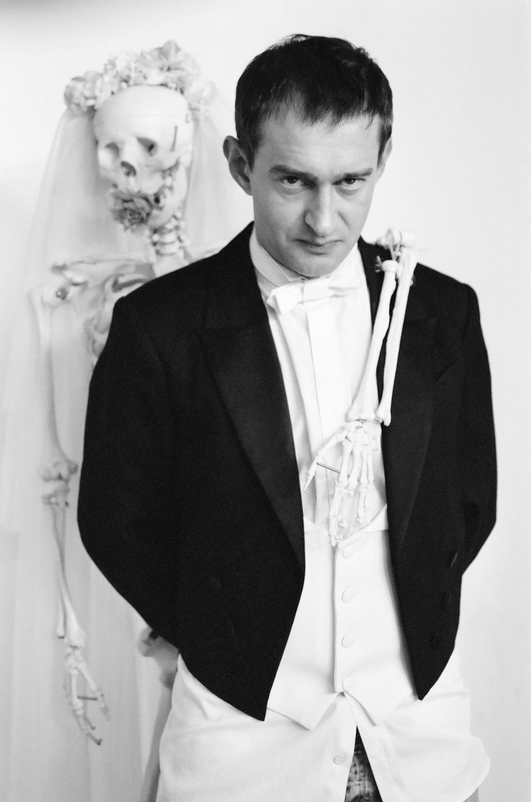
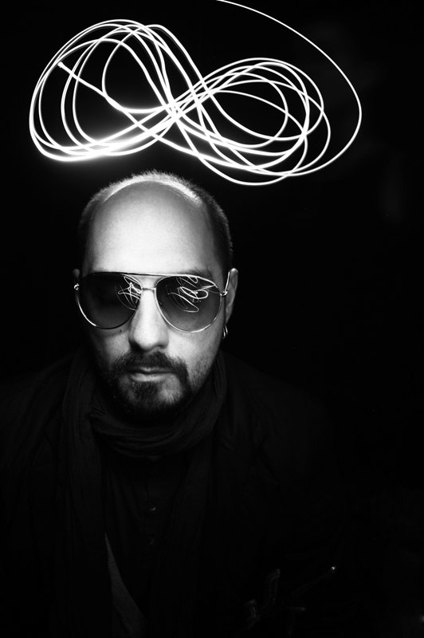
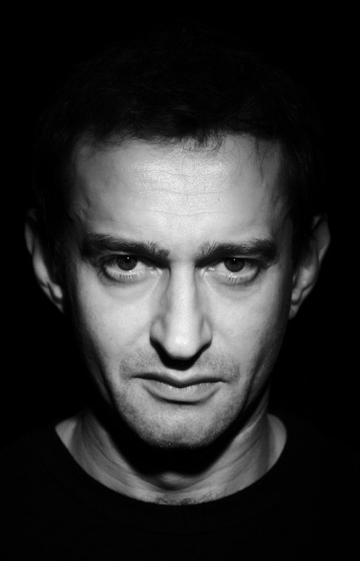

A special project with Kirill Serebrennikov for his Threepenny Opera at the Chekhov Moscow Art Theatre, 2009: portraits of the cast, Konstantin Khabensky among them, rehearsals and the stage.


I shoot theatre: books, posters and portraits of the company.
Discuss a project →Working worldwide, remotely. Invoicing in USD or EUR.